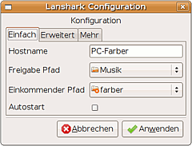

Lanshark
Archivierte Anleitung
Dieser Artikel wurde archiviert, da er - oder Teile daraus - nur noch unter einer älteren Ubuntu-Version nutzbar ist. Diese Anleitung wird vom Wiki-Team weder auf Richtigkeit überprüft noch anderweitig gepflegt. Zusätzlich wurde der Artikel für weitere Änderungen gesperrt.
Zum Verständnis dieses Artikels sind folgende Seiten hilfreich:
Lanshark  ist eine in Python geschriebene freie Filesharing-Anwendung. Lanshark dient dazu, Dateien mit anderen Benutzern im lokalen Netzwerk (LAN) auszutauschen. Andere Lanshark-Benutzer im Netzwerk werden automatisch erkannt. Man kann auf ihre Freigaben lesend zugreifen und diese auf den lokalen Rechner herunterladen (Download). Lanshark hat eine integrierte Suchfunktion.
ist eine in Python geschriebene freie Filesharing-Anwendung. Lanshark dient dazu, Dateien mit anderen Benutzern im lokalen Netzwerk (LAN) auszutauschen. Andere Lanshark-Benutzer im Netzwerk werden automatisch erkannt. Man kann auf ihre Freigaben lesend zugreifen und diese auf den lokalen Rechner herunterladen (Download). Lanshark hat eine integrierte Suchfunktion.
Eine Alternative zu Lanshark, jedoch mit anderer Funktionalität, ist Transfer on LAN.
Achtung!
Lanshark ist nur für die Verwendung in sicheren, nach außen abgeschirmten Netzwerken (auch VPN) vorgesehen. Es bietet keinen hinreichenden Schutz für die Verwendung in unsicheren Netzen (Internet) und für die Übertragung sensibler Daten.
Freigaben aller Art können auf Rechnern mit einem direkten Zugang zum Internet (ohne Router mit NAT) oder anderen öffentlichen Netzen ein erhebliches Sicherheitsrisiko bedeuten. Dies gilt insbesondere, wenn wie bei Lanshark kein Schutz durch (verschlüsselt übertragene) Zugangsdaten besteht.
Installation¶
Lanshark setzt die Pakete
python2.5
python-gtk2
python-glade2
 mit apturl
mit apturl
Paketliste zum Kopieren:
sudo apt-get install python2.5 python-gtk2 python-glade2
sudo aptitude install python2.5 python-gtk2 python-glade2
voraus [1].
Derzeit muss man den Quelltext (Sourcecode) herunterladen und entpacken [2].
Hinweis!
Fremdsoftware kann das System gefährden.
Die Installation erfolgt im entpackten Ordner mit:
sudo python setup.py install
Anschließend findet man das Programm unter "Anwendungen -> Internet -> Lanshark".
Die grafische Oberfläche lässt sich alternativ auch ohne Installation (von mobilen/externen Datenträgern) starten [3]:
python ./src/lansharkgui
Anwendung¶
Konfiguration¶
Über "Editieren -> Eigenschaften" lässt sich die grundlegende Konfiguration ausführen. Dafür gibt es zwei Bereiche:
Einfach¶

Hostname: Der Name, mit dem sich dieser Rechner im Netzwerk für Lanshark zu erkennen gibt
Freigabe Pfad: Hier wird der Pfad (Ordner) ausgewählt, der auf den anderen Rechnern im Netzwerk als scheinbares Wurzelverzeichnis dieses Rechners erscheint
Einkommender Pfad: Werden über Lanshark Dateien von anderen Rechnern kopiert, landen sie standardmäßig im hier festgelegten Verzeichnis. Mit "Download to" ist es aber auch möglich, Dateien direkt außerhalb dieses Verzeichnisses zu speichern.
Autostart: Da Lanshark-Freigaben nicht durch Zugriffskontrollen geschützt sind, sollte man hiervon nur mit Bedacht Gebrauch machen!
Erweitert¶
Hallo Nachricht: Eine Art Netzwerk-Kennung. Nur Rechner, bei denen hier die gleiche Kennung eingetragen ist, können einander sehen und voneinander Dateien kopieren.
Broadcast-Adresse: Das Browsen im Netzwerk führt Lanshark mittels Rundspruch (Broadcast) durch. Dabei werden nur diejenigen Rechner erfasst, deren IP-Adresse in der hier angegebenen Maske enthalten ist. Damit kann man in komplexeren Netzwerken eine Vorauswahl unter den vorhandenen Rechnern treffen.
Port: Hier lässt sich der standardmäßig von Lanshark verwendete Port verändern.
Hinweis:
Den verwendeten Port zu verändern ist keine wirksame Zugriffskontrolle, da offene Ports auf allen Rechnern des Netzwerks mit einem Port-Scan leicht zu ermitteln sind.
detaillierte Konfiguration¶
Für eine detailliertere Konfiguration muss man die versteckte Datei ~/.config/lanshark/lanshark.conf mit einem Editor [4] bearbeiten. Einstellungen in dieser Datei sind dann wirksam, wenn die Zeile nicht mit dem Kommentarzeichen (#) beginnt. Die Datei ist ausreichend (auf Englisch) kommentiert.
Browser¶
In regelmäßigen Zeitabständen (standardmäßig einmal pro Minute) durchsucht Lanshark das lokale Netzwerk mit einem Rundspruch (Broadcast). Erfasst und im linken Feld des Browser-Fensters als Verzeichnisbaum dargestellt werden die Freigaben derjenigen Rechner, deren IP und Kennung den eingetragenen Werten entsprechen. Dort mit Mausklick markierte Ordner werden im rechten Feld geöffnet. Hat man aus diesen die gewünschte Auswahl getroffen, klickt man oben rechts das Download-Symbol an. Mit "Download Liste" bekommt man eine Übersicht über begonnene und bereits durchgeführte Downloads.
Außerdem besteht die Möglichkeit, über Rechtsklick -> "Preview" oder Drag & Drop in einen Media Player (z.B. Totem) Filme und Musik zu streamen.
Webinterface öffnen¶
Mit "Lanshark -> Webinterface öffnen" kann die momentane Datei-Auswahl vom internen Browser an den Standard-Internet-Browser (Firefox, Opera, Konqueror u.a.) übergeben werden. So wird es möglich, auf einige Dateien (Musik, Video, Bilder ...) über die dort installierten Plugins direkt zuzugreifen, ohne sie vorher auf den lokalen Rechner zu kopieren.
Suchen¶
Zusätzlich zum Netzwerk-Browser verfügt Lanshark über eine Suchfunktion, mit der das Netzwerk gezielt und schnell nach Dateien aus zehn verschiedenen Kategorien durchsucht werden kann.
Andere Plattformen¶
Windows-Version¶
Von Lanshark gibt es auch eine Version für Windows (Win XP und Vista) mit gleich strukturierter graphischer Oberfläche. Deshalb ist der Daten-Austausch mit Windows-Rechnern über Lanshark kein Problem.
Sonderzeichen¶
Standardmäßig ist als Zeichen-Codierung UTF-8 eingestellt. Andere Codierungen können in der Konfigurations-Datei ~/.config/lanshark/lanshark.conf eingetragen werden.
Zugriffskontrolle und Sicherheit¶
Authentifikation und Zugriffsrechte¶
Die Netzwerk-Kennung ("Hallo Nachricht") bietet nur einen sehr einfachen Schutz vor unerlaubten Zugriffen, da sie unverschlüsselt übertragen wird. Es ist nicht möglich, Zugriffe differenziert einzelnen Rechnern oder Benutzern zu gestatten oder zu untersagen. Auf die Freigaben können grundsätzlich alle Rechner mit der gleichen Netzwerk-Kennung und auf diesen gleichermaßen alle Benutzer lesend zugreifen. Schreibrechte können über Lanshark nicht vergeben werden.
Freigabe-Pfad¶
Das für Lanshark freigegebene Verzeichnis (Freigabe-Pfad) erscheint auf den anderen Rechnern im Netzwerk als scheinbares Wurzelverzeichnis. Der direkte Zugriff auf Ordner und Dateien außerhalb desselben ist über Lanshark nicht möglich. Dies wirkt sich ähnlich aus wie ein "root-jail" (von "root directory" = Wurzelverzeichnis; nicht Benutzer "Root").
Da Lanshark im Gegensatz zu manchen anderen Netzwerk-Anwendungen auch symbolischen Verknüpfungen (Symlinks) folgt, kann man über solche auch auf Ordner oder Dateien außerhalb des Freigabe-Pfads zugreifen. Bei bewusster Anwendung ist dies jedoch kein Sicherheitsrisiko, weil man vom Client aus auf dem Server keine Symlinks einrichten kann.
Ports¶
Lanshark verwendet keinen statisch installierten Server mit dauerhaft geöffneten Ports. Die zum Datenaustausch benötigten Ports werden erst beim Programmstart geöffnet und nach dem Verlassen des Programms ("Lanshark -> Beenden" oder Rechtsklick auf Icon im Panel und "Beenden"), nicht jedoch nach dem einfachen Schließen des Auswahlfensters, wieder geschlossen.
Hinweis:
Wie bei allen Filesharing-Programmen empfiehlt es sich auch bei Lanshark, das Programm bei Nichtgebrauch ganz zu beenden ("Lanshark -> beenden", nicht nur das Auswahlfenster schließen).
Links¶
- Erstellt mit Inyoka
-
 2004 – 2017 ubuntuusers.de • Einige Rechte vorbehalten
2004 – 2017 ubuntuusers.de • Einige Rechte vorbehalten
Lizenz • Kontakt • Datenschutz • Impressum • Serverstatus -
Serverhousing gespendet von